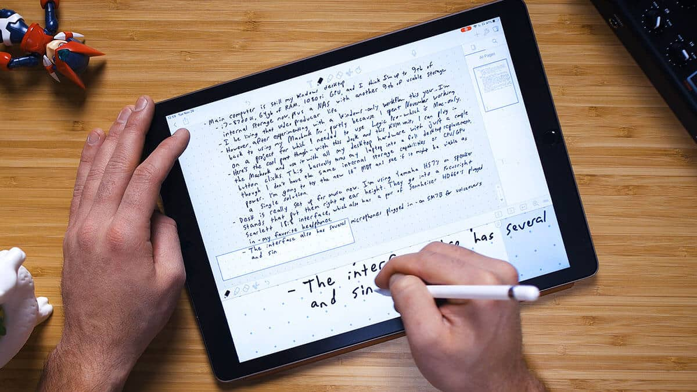
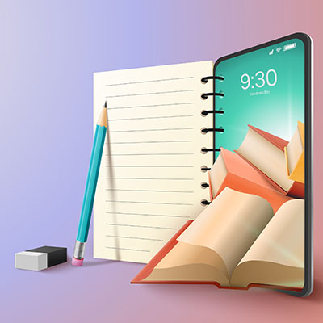

CONTENT/>
Features of the note-taking app
“
- [Instructor] Let's start by talking about features of our note-taking application. So the features are, first, you're going to be creating and editing simple text-based notes. You'll be navigating and data sharing between multiple screens. The app can save data to the mobile device's persistent storage, and it has easily discoverable command patterns to accept user input. Think of a plus button to create a new note, a button that says edit to tap on to edit the notes and remove notes if you want to delete them. Here's how the app is going to work. The user taps the plus button to create a new note. Then the user moves from the list view to the editor view. And on the editor screen, the user can make changes to the note. When the user is done editing the note, user can go back to the list view by pressing the back button at the top of the screen. All of the new and previously saved notes are visible on the list screen. That includes notes saved previously in persistent storage.
WHAT IS NOTE TAKING/>
Note-taking applications (also called note-taking apps) allow students to: Store all notes and important information digitally, usually in a cloud-based storage system. Type, write, and draw notes on the device of choice just as one would using pen and paper.
Note-taking is the process of capturing information from a source or event. This usually takes the form of recording, writing, jotting, paraphrasing, sketching, labelling, outlining, and annotating. Note-taking applications enable users to type, write, and draw on their devices just as they would on paper. Many applications have their own unique features, storage, organization, and sharing capabilities, and it’s up to the user to identify which note-taking application will work .

HOW DOES IT WORK/>
The user will access the applications through the device of their choice, commonly via a laptop or tablet. Some note-taking applications are available cross-platform and on multiple devices while others may be limited to one platform or device. For example, Notability is only available within Apple products whereas OneNote markets their availability across all platforms and devices.
Each application contains their own unique set of features which can limit (or exceed) their effectiveness in various scenarios. For example, a STEM student taking notes in class will have distinct needs from an employee who is taking notes during a business meeting. Therefore, the STEM student might want an application that provides rich handwriting tools, equation editors and may invest in a stylus and tablet to take effective notes. The STEM student might also want the application to have dividers and subcategories to organize the classes or projects they work on. The employee on the other hand may want a simpler interface to keep track of minutes using a laptop, and the number of projects will determine the type of categorizing and divisions they might need.
WHERE IS IT GOING/>
Currently, the popularization of the internet has led to a decline in revenue in the paper industry [5], but the pen and pencil industry’s revenue has grown in recent years [6]. These conflicting numbers are inconclusive in regards to whether or not students are abandoning paper-based note-taking. Many students are taking advantage of the ubiquity of electronics in the classroom, but still many prefer the traditional paper-based note taking.
As the note-taking technology becomes more sophisticated with the incorporation of scribe pens and styli, we can expect to see a rise of note-taking devices in the classroom in various forms. With the rise of online, hybrid, and blended learning courses, we can see the potential for transferring complex information, such as handwritten text or drawings, digitally. Tools outside of the note-taking realm are also taking up note-taking features. For example, eBooks are now using note-taking features such as annotating, highlighting.

WHAT ARE THE IMPLICATIONS FOR TEACHING AND LEARNING/>
There is potential for faculty to become actively involved in developing the note-taking skills in their students. The main advantage of note-taking applications is that notes can be shared between students and teachers. These notes can serve as reminders to complete assignments or as a pedagogical tool to elaborate on in-class lectures, create discussion questions, and more. The applications with the greatest potential are those that allow for real-time collaboration. In this way, a group of students ranging from as small as two to as large as an entire class can participate in viewing, updating, and/or creating a document, simultaneously.